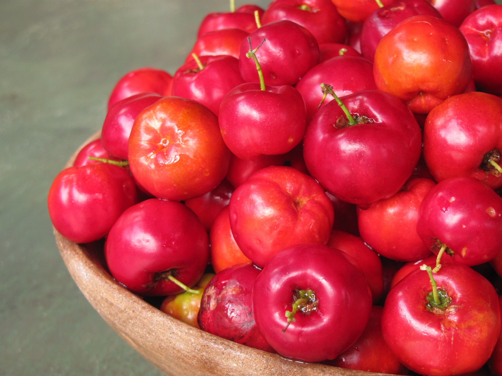

Manteiga é saudável?
postado 20 de março de 2022De origem vegetal, a margarina é um produto artificial resultado de um processo chamado hidrogenação. Nele, as moléculas de hidrogênio são incorporadas às de gordura de maneira artificial, em altas temperaturas. É o calor que transforma a gordura insaturada em parcialmente saturada. Também durante a hidrogenação, as moléculas de gordura viram gordura trans; transformando a margarina praticamente em um plástico..
Continue lendoBenefícios da goiaba
postado 10 de março de 2022
A goiaba é rica em muitas vitaminas e minerais. Por ser rica em vitamina C, ela ajuda a melhorar o funcionamento do sistema imunológico e auxilia na absorção de ferro. Ela também atua como um antioxidante natural, que ajuda a combater o envelhecimento precoce.....
Continue lendoBenefícios da Acerola para Saúde
postado 10 de março de 2022 A acerola é uma fruta que pode ser usada como planta medicinal devido à alta concentração de vitamina C. Os frutos da acerola, além de saborosos, são muito nutritivos, porque são muito ricos também em vitamina A, vitaminas do Complexo B, ferro e cálcio.....
Continue lendo